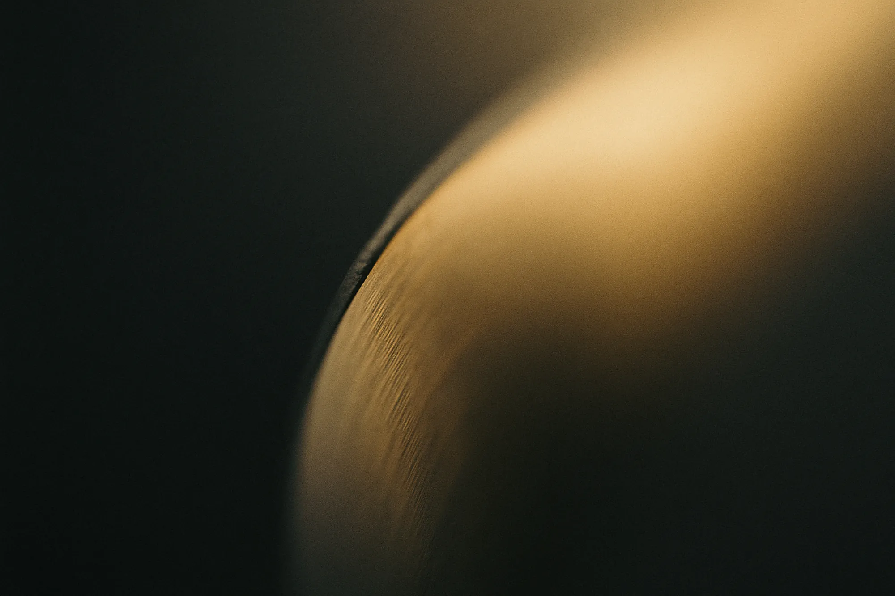
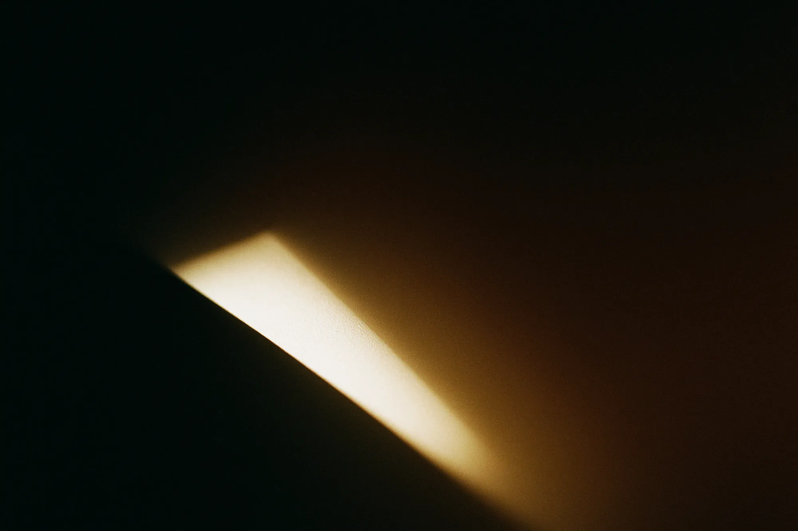
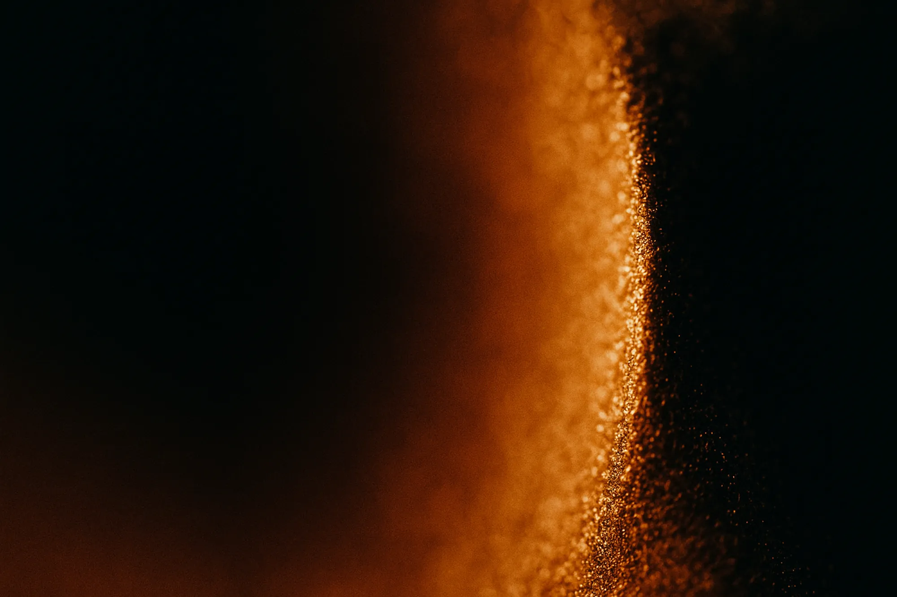
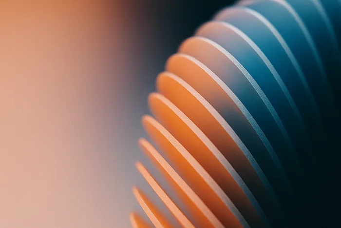
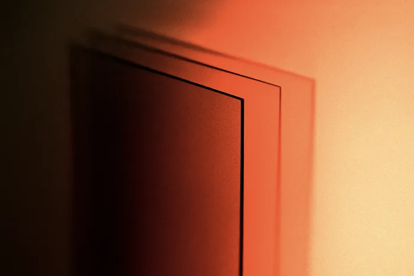
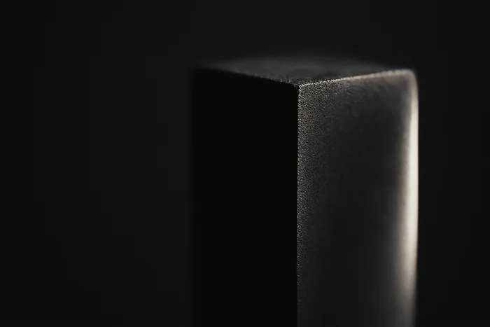

The Academy
Six issues on learning the tools properly instead of collecting them. Starts at prompt structure, ends at a repo that runs itself.
Watch the seriesEvery issue is one short film and one working pack. Watch it, comment the keyword, and the files land in your DMs — config, prompts, links, nothing held back.

One short a day, on TikTok, Instagram, YouTube and X. Sixty seconds, no intro, no outro.
Every film ends on a single word. Comment it and the bot picks it up.
The pack arrives as working links — the config, the prompts, the repo. No signup, no gate.
The archive is public and permanent. The newsletter is the only thing you sign up for, and it is also free.

Six issues on learning the tools properly instead of collecting them. Starts at prompt structure, ends at a repo that runs itself.
Watch the series
Seven rules in one file. The config that stopped the rewrites, and what each line is actually defending against.
Watch the seriesFrom one delegated task to a standing crew. What to hand over, what never to, and how to tell the difference early.
Watch the seriesNine tools too good to be free, and the honest reason each one is. Licences read, not assumed.
Watch the series
One long-form teardown a week: an automation pulled apart, costed, and rebuilt in public. What it replaced, what it broke, what it actually saved.
Three files, no database, and the moment it stopped starting from zero every run.
The prompt got out. Reading it changed how we write every config since.


